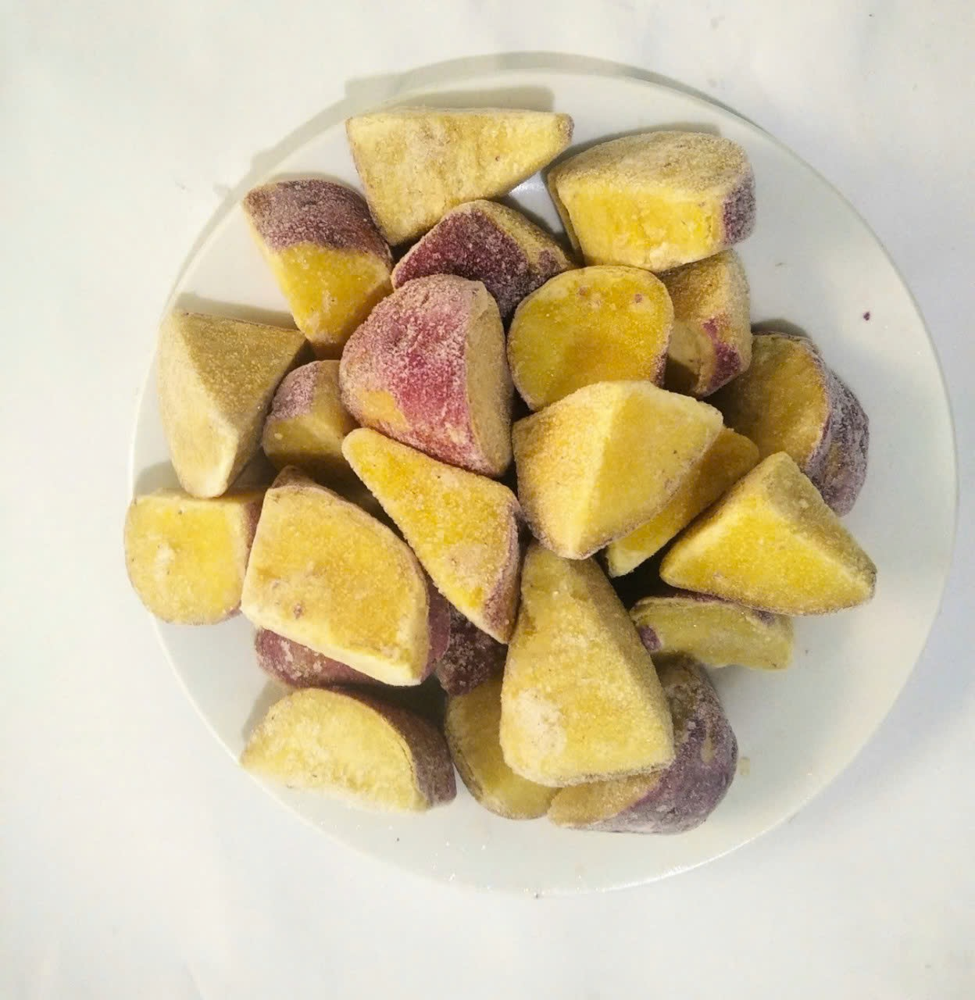

冷凍IQF野菜・果実
収穫後すぐに加工し、IQF（個体急冷）で一粒ごとに凍結。風味・栄養・色合いを保ち、使いたい分だけ取り出せます。下ごしらえ不要。日本・韓国・EU・ASEANの食品企業に安定供給とトレーサビリティでお応えします。
- 対応品目さつまいも、オクラ、ズッキーニ、ナス、パプリカ、ミックスベジタブル、マンゴー、りんご、メロン、バナナ ほか
- カットホール／スライス／ダイス／乱切り
- 加工ブランチング、衣付け（天ぷら用）、素凍り
- 冷凍IQF・個体急冷 Tunnel Freezer
- 規格1kg × 10箱／カートン、その他OEM対応
- 保冷−18℃以下・輸出コンテナ一貫コールドチェーン
- 認証HACCP / ISO 22000 / EU認可（DL.179）

インゲン豆（ホール・ボイル）IQF・個体急冷

オクラ衣付け（天ぷら用）付加価値加工・HACCP

ズッキーニ・スライスカット均一・色残り良好

ズッキーニ・ダイス10–12mm・スープ・炒め物用

サツマイモ・スライス均一スライス・IQF

イエローパプリカ・ダイス10–12mm均一ダイス

イタリアン焼き野菜ミックスパプリカ・ズッキーニ・ナス使用

焼き野菜ミックス・角切り角切り・下処理済み

ナス・蒸しランダム・皮なし蒸し・皮むき・ランダムカット

ナス・蒸しランダム・皮なし蒸し・皮むき・ランダムカット

ナス・ホール焼き・皮むきホール・焼き・皮むき

イタリアンミックス（パプリカ・ズッキーニ・ナス）ソテー・焼き野菜用カット

焼きパプリカ・2cmカット直火焼き・皮むき・IQF

サツマイモ・マボカット麻婆・炒め物用カット

サツマイモ・ダイス10–12mm均一カット

ナス・スティック皮ごと・変色防止